Este es un juego por mí inventado cuyo objetivo consiste en hacer evolucionar e involucionar figuras. Entiendo que las influencias de este juego sean evidentes; pero lo probé con mi primo de doce y no pareció notarlo.
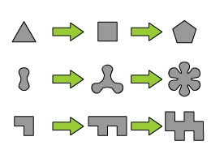
Estas son tres figuras básicas y sus evoluciones. La flechita es un metasímbolo que se lee "evoluciona a".
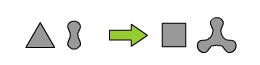
La evolución de figuras yuxtapuestas es la yuxtaposición de sus evoluciones.
El puntito verde entre dos figuras señala simbiosis entre ellas.
Dos figuras en simbiosis evolucionan a la yuxtaposición de la simbiosis entre la evolución de la primera y la segunda sin evolucionar, y la simbiosis entre la primera sin evolucionar y la evolución de la segunda. (No lo podría haber expresado de manera más evidente).
Si hay más figuras en simbiosis, se yuxtaponen las figuras resultantes de evolucionar una de las figuras componentes de la simbiosis y dejar las restantes sin evolucionar.
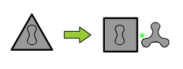
Una figura con otra gestándose adentro evoluciona a: la evolución de la de afuera con la de adentro gestándose, simbiotizada con la de adentro evolucionada.
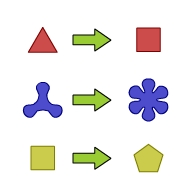
La evolución de una figura no depende de su color, pero en la evolución el color se respeta.
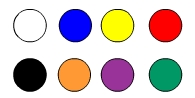
Todo color tiene un color complementario (el usual).
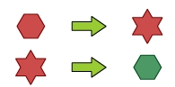
El hexágono evoluciona a una estrella de seis puntas. La estrella de seis puntas evoluciona a un hexágono del color complementario.
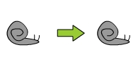
El caracol evoluciona al caracol.
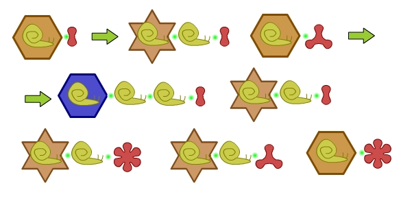
Hexágono naranja gestando caracol amarillo simbiotizados con gota roja. La evolución, y la evolución de la evolución.
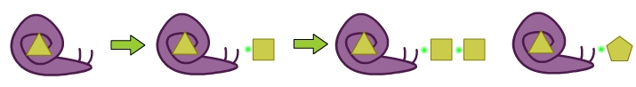
Caracol violeta gestando triángulo amarillo (¿no parecen títulos de cuadros modernos?). Evolución y doble evolución.
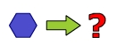
Evolucionar diez (sí, diez) veces el hexágono azul.
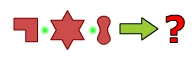
Evolucionar dos veces la simbiosis.
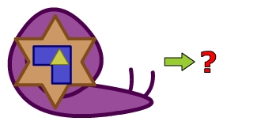
Evolucionar al caracol gigante y a todos sus hijitos.
A veces también (dentro del juego) puede servir involucionar una figura. En otras palabras, si tenemos una figura que es resultado de una evolución, queremos saber qué otra figura le dio origen.
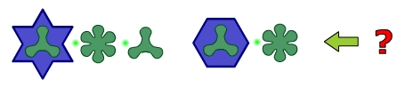
Involucionar esta figura.
En realidad, mientras hacía Análisis I quería hacerle entender a mi hermana por qué yo decía que derivar es mecánico e integrar es divertido. Y para no aburrirla con números, la aburrí con figuras.
El sistema este es imperfecto y feo. Pero quizá mejorado pueda servir para enseñar la mecánica de las derivadas, como introducción para gente que tema a los números.
¿Algo que acotar que no sean integrales impropias?